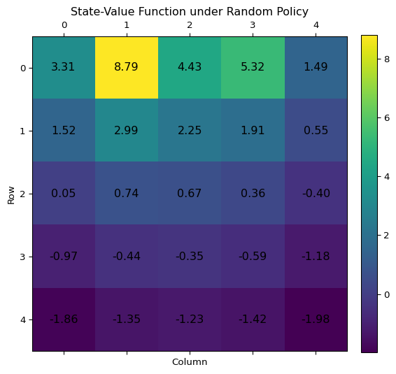

3 Finite Markov Decision Processes
3.1 The Agent–Environment Interface
We are already anticipating Exercise 3.5 and will give the formulations for a Markov Decision Process (MDP) for continuing and episodic tasks.
A continuing trajectory looks like this: \[ S_0, A_0, R_1, S_1, A_1, R_2, S_2 A_2, R_3, \dots, \] and an episodic trajectory looks like this: \[ S_0, A_0, R_1, S_1, A_1, \dots R_{T-1}, S_{T-1}, A_{T-1}, R_T, S_T. \] Note that the sequencing of actions and rewards has changed from the previous chapter. Now, the reward for an action \(A_t\) is \(R_{t+1}\), not \(R_t\) as before.
An MDP is completely described by its dynamics: \[ p(s', r |s,a) := \mathrm{Pr}(S_t = s', R_t = r \mid S_{t-1} = s, A_{t-1} = a) \tag{3.1}\] giving the probability that, from state \(s \in \mathcal{S}\) under action \(a \in \mathcal{A}(s)\), the environment transitions to state \(s' \in \mathcal{S}^+\), where \(\mathcal{S}^+\) denotes the state space with any possible terminal states, and gives reward \(r \in \mathcal{R}\).
In particular when \(s\) and \(a\) are fixed \(p(s', r | s,a)\) is a discrete probability density, i.e., \[ p(\cdot, \cdot | s,a)\colon \mathcal{S}^+ \times \mathcal{R} \to [0,1] \] and \[ \sum_{s' \in \mathcal{S}^+, r \in \mathcal{R}} p(s',r | s,a) = 1. \tag{3.2}\]
I want to add some more words about MDP and other Markov Chains that will be important for us.
3.1.1 markov chains
Very generally, Markov chains are processes modelled with sequences of random variables \(X_1, X_2, \dots\), where the conditional probabilities have a finite horizon. We will describe Markov Chains with increasing complexity until we end up at MDPs.
markov process (MP)
MPs model systems that evolve randomly over discrete time steps. They are a sequence of random variables \(S_0, S_1, \dots\), where \(S_t\) is the state of the system at time \(t\). In the past the system was in the states \(S_0, \dots, S_{t-1}\) and its future is \(S_{t+1}\).
The defining property of a Markov chain is that the future is independent of the past given the present state of the process. This is expressed as: \[ \mathrm{Pr}(S_{t+1} = s' \mid S_t = s, (S_{t'} = s_{t'})_{t' < t}) = \mathrm{Pr}(S_{t+1} = s' \mid S_t = s) \]
Usually we require the environment to be stationary, i.e., the transition probabilities are independent of \(t\): \[ \mathrm{Pr}(S_{t+1} = s' \mid S_t = s) = \mathrm{Pr}(S_{t'+1} = s' \mid S_t' = s) \]
So, in our case a Markov Process1 is completely described by
- state space \(\mathcal{S}\) and
- transition probabilities: \(p(s' | s) := P(S_{t+1}=s′∣ S_t=s)\).
markov reward process (MRP)
A Markov Reward Process adds a reward structure to a Markov Process. What are we rewarded for? Simply for observing the process diligently and keeping our feet still as there is no interaction with the environment yet.
Here, we have a sequence of random variables \(R_0, S_0, R_1, S_1, R_2, \dots\). Basically it’s a sequence of random vectors \((R_i, S_i)\), where \(S_i\) tracks the state and the \(R_i\) give us some numerical information about the system. (Sutton and Barto usually omit the 0-th reward, which occurs before anything really happens—essentially a reward for starting the environment. It doesn’t change much, of course, but I like the symmetry it brings.)
A Markov reward process (MRP) is therefore specified by:
- finite state space \(\mathcal{S}\)
- finite reward space \(\mathcal{R} \subseteq \mathbb{R}\)
- \(p(s', r | s) := \mathrm{Pr}(S_{t+1}=s', R_{t+1} = r∣ S_t = s)\).
Here \(p(\cdot, \cdot | s)\) is a probability measure on the product space \(\mathcal{S} \times \mathcal{R}\), in particular \(\sum_{s' \in \mathcal{S}, r \in \mathcal{R}} p(s',r|s) = 1\)
markov decision process (MDP)
Now we add interaction to the environment.
The trajectory looks like this: \[ R_0, S_0, A_0, R_1, S_1, A_1, \dots , \] where \(R_i\) take values in the reward space \(\mathcal{R}\), \(S_i\) values in the state space \(\mathcal{S}\), and \(A_i\) in the action space \(\mathcal{A}\).
The full dynamic of this process is an interwoven interaction between environment and agent. It looks a bit like this: \[ (R_0, S_0) \overset{\text{agent}}{\to} A_0 \overset{\text{env}}{\to}(R_1, S_1) \overset{\text{agent}}{\to} A_1 \overset{\text{env}}{\to} \dots \] So, going from \(S_t, A_t\) to the next state-reward pair is given by the environment \[ p(s', r | s, a) := \mathrm{Pr}(S_{t+1}=s', R_{t+1} = r∣ S_t = s, A_t = a). \] and going from a state reward pair to an action is is given by the agent \[ \pi_t(a|s) = \mathrm{Pr}(A_t = a | S_t = s). \] If the agent is stationary, we can drop the \(t\). \[ \pi(a|s) = \mathrm{Pr}(A_t = a | S_t = s) \]
Exercise 3.1 Devise three example tasks of your own that fit into the MDP framework, identifying for each its states, actions, and rewards. Make the three examples as different from each other as possible. The framework is abstract and flexible and can be applied in many different ways. Stretch its limits in some way in at least one of your examples.
Solution 3.1. TBD
Exercise 3.2 Is the MDP framework adequate to usefully represent all goal-directed learning tasks? Can you think of any clear exceptions?
Solution 3.2. No, I can’t think of any clear exceptions. There’s only the challenge of how to model MDP for goals that we don’t know how to specify properly in the reward signal, e.g., human happiness. I can’t come up with a reward signal that wouldn’t be vulnerable to reward hacking, like “number pressed by user on screen”, “time smiling”, “endorphins level in brain”.
Exercise 3.3 Consider the problem of driving. You could define the actions in terms of the accelerator, steering wheel, and brake, that is, where your body meets the machine. Or you could define them farther out—say, where the rubber meets the road, considering your actions to be tire torques. Or you could define them farther in—say, where your brain meets your body, the actions being muscle twitches to control your limbs. Or you could go to a really high level and say that your actions are your choices of where to drive. What is the right level, the right place to draw the line between agent and environment? On what basis is one location of the line to be preferred over another? Is there any fundamental reason for preferring one location over another, or is it a free choice?
Solution 3.3. TBD
Exercise 3.4 Give a table analogous to that in Example 3.3, but for \(p(s' , r |s, a)\). It should have columns for \(s, a, s' , r\) and \(p(s' , r |s, a)\), and a row for every 4-tuple for which \(p(s', r |s, a) > 0\).
Solution 3.4.
| s | a | s’ | r | p(s’,r | s,a) |
|---|---|---|---|---|
| high | wait | high | r_wait | 1 |
| high | search | high | r_search | α |
| high | search | low | r_search | 1 - α |
| low | wait | low | r_wait | 1 |
| low | search | low | r_search | β |
| low | search | high | -3 | 1 - β |
| low | recharge | high | 0 | 1 |
3.2 Goals and Rewards
3.3 Returns and Episodes
The expected (discounted) return is defined as: \[ G_t := \sum_{k=0}^{\infty} \gamma^k R_{t+k+1}. \tag{3.3}\] For episodic tasks we have the convention that \(R_{t} = 0\) when \(t > T\), and thus, in particular, \(G_T = 0\).
In an undiscounted, episodic task, this becomes \[ G_t := \sum_{k=0}^{T-t-1} R_{t+k+1} \tag{3.4}\]
Another important recursive identity is \[ G_t = R_{t+1} + \gamma G_{t+1} \tag{3.5}\]
Exercise 3.5 The equations in Section 3.1 are for the continuing case and need to be modified (very slightly) to apply to episodic tasks. Show that you know the modifications needed by giving the modified version of Equation 3.2
Solution 3.5. We already described Section 3.1 for continuing and episodic tasks. So, Equation 3.2 is already in the right form.
Exercise 3.6 Suppose you treated pole-balancing as an episodic task but also used discounting, with all rewards zero except for -1 upon failure. What then would the return be at each time? How does this return differ from that in the discounted, continuing formulation of this task?
Solution 3.6. The reward at time \(t\) would be \[ G_t = \sum_{k=0}^{T-t-1} \gamma^k R_{t + k+1} = -\gamma^{T - t - 1}, \] where \(T\) is the length of that episode.
In the continuing formulation there can be multiple failures in the future so the return is of the form \(-\gamma^{K_1} - \gamma^{K_2} - \dots\). Here there can always just be one failure.
Exercise 3.7 Imagine that you are designing a robot to run a maze. You decide to give it a reward of +1 for escaping from the maze and a reward of zero at all other times. The task seems to break down naturally into episodes—the successive runs through the maze—so you decide to treat it as an episodic task, where the goal is to maximize expected total reward Equation 3.4. After running the learning agent for a while, you find that it is showing no improvement in escaping from the maze. What is going wrong? Have you effectively communicated to the agent what you want it to achieve?
Solution 3.7. In this setup the reward basically says: “Finish the maze eventually.”. So when the robot has learned to finish a maze somehow, it can’t perform better regarding this reward.
Exercise 3.8 Suppose \(\gamma = 0.5\) and the following sequence of rewards is received \(R_1 = 1, R_2 = 2, R_3 = 6, R_4 = 3, R_5 = 2\), with \(T = 5\). What are \(G_0, G_1 \dots, G_5\)? Hint: Work backwards.
Solution 3.8. We can use the recursive formula (Equation 3.5) for the reward: \(G_t = R_{t+1} + \gamma G_{t+1}\)
| t | \(R_{t+1}\) | \(\gamma G_{t+1}\) | \(G_t\) |
|---|---|---|---|
| 5 | 0 | 0 | 0 |
| 4 | 2 | 0 | 2 |
| 3 | 3 | 1 | 4 |
| 2 | 6 | 2 | 8 |
| 1 | 2 | 8 | 10 |
| 0 | 1 | 5 | 6 |
We recall that, by convention, \(R_t := 0\) for \(t > T\)
Exercise 3.9 Suppose \(\gamma = 0.9\) and the reward sequence is \(R_1 = 2\) followed by an infinite sequence of 7s. What are \(G_1\) and \(G_0\)?
Solution 3.9. \[ G_1 = \sum_{k=0}^\infty 0.9^k R_{2+k} = 7 \sum_{k=0}^\infty 0.9^k = 7 / 0.1 = 70 \] and \[ G_0 = R_1 + \gamma G_1 = 2 + 0.9 \cdot G_1 = 2 + 0.9 \cdot 70 = 65 \]
Exercise 3.10 Prove the second equality in (3.10).
Solution 3.10. See Section 2.11.8 for a proof.
3.4 Unified Notation for Episodic and Continuing Tasks
3.5 Policies and Value Functions
The policy distribution together with the MDP dynamics completely specify the distribution over trajectories. We write \(\mathrm{Pr}_\pi\) and \(\mathbb{E}_\pi\) to indicate which policy is used.
We want to evaluate stationary policies \(\pi\). For example something like \(\mathbb{E}_\pi[R_{t+1} \mid S_t = s]\).
Exercise 3.11 If the current state is \(S_t\), and actions are selected according to stochastic policy \(\pi\), then what is the expectation of \(R_{t+1}\) in terms of \(\pi\) and the four-argument function \(p\) (Equation 3.1)?
Solution 3.11. It’s clearer to rephrase the exercise as “given that the current state \(S_t\) is \(s\)”, so we proceed with that.
We’ll solve this two ways: first, intuitively; then, using our theory machine.
Intuitively when \(S_t = s\) then we know that \(A_t\) is distributed according to \(\pi(\cdot | s)\) and then from \(S_t\) and \(A_t\) we can get the next \(S_{t+1}, R_{t+1}\) via the MDP dynamics measure. So let’s put this together. The agent selects \(a\) with probability \(\pi(a \mid s)\), and then the environment transitions to \((s', r)\) with probability \(p(s', r | s,a)\). We don’t care about the \(s'\) right now. So we get reward \(r\) with probability \(\sum_{s'} p(s',r | s,a)\). Thus we have \[ \mathbb{E}_{\pi}[R_{t+1} \mid S_t = s] = \sum_{a} \pi(a|s) \sum_{r} r \left(\sum_{s'} p(s',r | s,a)\right) \] Or in a nicer format \[ \mathbb{E}_{\pi}[R_{t+1} \mid S_t = s] = \sum_{a} \pi(a|s) \sum_{r,s'} r \; p(s',r | s,a) \]
Now let us derive this using LOTUS (Theorem 2.1) the law of total expectation (Theorem 2.3) \[ \begin{split} \mathbb{E}_{\pi}&[R_{t+1} \mid S_t = s] = \sum_{r} r \; \mathrm{Pr}_{\pi}[R_{t+1} = r \mid S_t = s] \\ &= \sum_r r \sum_{a, s'} \mathrm{Pr}_{\pi}[R_{t+1} = r, S_{t+1} = s' \mid A_t = a, S_t = s] \mathrm{Pr}_{\pi}[A_t = a \mid S_t = s] \\ &= \sum_{r,a,s'} p(s',r | a,s) \pi(a|s) \end{split} \]
The value functions quantify how desirable it is to be in a given state (or to take a given action in a state), under that policy:
- state value function: \[ v_\pi(s) := \mathbb{E}_{\pi}[G_t \mid S_t = s] \]
- action-value function: \[ q_{\pi}(s,a) := \mathbb{E}_{\pi}[G_t \mid S_t = s, A_t = a] \]
Exercise 3.12 Give an equation for \(v_\pi\) in terms of \(q_\pi\) and \(\pi\).
Solution 3.12. Quick and easy answer is: \[ v_{\pi}(s) = \sum_{a} \pi(a|s) q_{\pi}(s,a) \tag{3.6}\]
Exercise 3.13 Give an equation for \(q_\pi\) in terms of \(v_\pi\) and the four-argument \(p\)
Solution 3.13. And again: \[ q_{\pi}(s,a) = \sum_{s',r} p(s',r|s,a) [r + \gamma v_{\pi}(s')] \tag{3.7}\]
We can get the Bellman equations for \(v_\pi\) and \(q_\pi\) by combining Equation 3.6 with Equation 3.7. \[ v_\pi(s) = \sum_{a} \pi(a|s) \sum_{s',r}p(s',r|s,a)[r + \gamma v_\pi(s')] \tag{3.8}\] \[ q_{\pi}(s,a) = \sum_{s',r} p(s',r|s,a) [r + \gamma \sum_{a'}\pi(a'|s')q_{\pi}(s'|a')] \tag{3.9}\]
Some people say they express, in a kind of recursive form, the relationship between the state’s value and the next state’s value. (I wouldn’t call this “recursive” myself, especially in continuing tasks where there’s no base case)
What I found helpful for understanding was writing the Bellman equations as a system of linear equations. We won’t be needing any of this later. Let’s write the value function as a vector \(v_\pi\) (indexed by \(\mathcal{S}\)). Then we can write the Bellman equations like \[ \mathbf{v}_\pi = \mathbf{r}_{\pi} + \gamma \mathbf{P}_\pi \mathbf{v}_\pi, \] where \(\mathbf{r}_\pi\) is the expected reward, and \(\mathbf{P}_\pi\) is the transition matrix under policy \(\pi\): Specifically \[ (\mathbf{R}_\pi)_s = \sum_{a} \pi(a|s) \sum_{s',r}p(s',r|s,a)r \] and \[ (\mathbf{P}_\pi)_{s,s'} = \sum_{a} \pi(a|s) \sum_{r} p(s',r|s,a). \]
One can check that the Bellman equation for \(v_\pi\) (Equation 3.8) is indeed one row of this vector equation. For episodic tasks, we use the convention that that \((\mathbf{R}_\pi)_s = 0\), \((\mathbf{P}_\pi)_{s,s} =1\), and \((\mathbf{v}_\pi)_{s} = 0\) for terminal states \(s\).
Example 3.1 This is (Sutton and Barto 2018, example 3.5: Gridworld).
First, Apologies for this ugly gridworld diagram below - this was the best I could manage with Graphviz.
Here’s a quick recap of the gridworld setup. The states are the cells in an \(5 \times 5\)-grid. The actions are up, down, left, right each normally with a reward of +0. When bumping into a wall the position does not change and the reward is -1. When moving any direction from A or B the reward is +10 respectively +5 and the agent gets beamed to A’ respectively B’.
Let’s solve the Bellman equation for the Gridworld in python. Here is some code that sets up the Gridworld class and a nice plotter for the value function. It’s good code but no need to read the fine print.
Code
import matplotlib.pyplot as plt
import numpy as np
import matplotlib.pyplot as plt
from enum import Enum
from typing import Callable, Dict, Tuple
class Action(Enum):
UP = (-1, 0)
DOWN = (1, 0)
LEFT = (0, -1)
RIGHT = (0, 1)
class SpecialCell:
def __init__(self, reward: float, teleport: Tuple[int, int]):
self.reward = reward
self.teleport = teleport
class Gridworld:
"""
A simple Gridworld MDP with teleporting special cells.
"""
def __init__(
self,
size: int,
special_cells: Dict[Tuple[int, int], SpecialCell],
default_reward: float = 0.0,
boundary_penalty: float = -1.0,
):
self.size = size
self.n_states = size * size
self.special_cells = special_cells
self.default_reward = default_reward
self.boundary_penalty = boundary_penalty
self.actions = list(Action)
self.n_actions = len(self.actions)
def state_index(self, position: Tuple[int, int]) -> int:
i, j = position
return i * self.size + j
def index_state(self, idx: int) -> Tuple[int, int]:
return divmod(idx, self.size)
def is_boundary(self, position: Tuple[int, int]) -> bool:
i, j = position
return not (0 <= i < self.size and 0 <= j < self.size)
def expected_rewards(self, policy: Callable[[int, Action], float]) -> np.ndarray:
"""
Compute expected immediate rewards R[s] under a given policy.
"""
R = np.zeros(self.n_states)
for s in range(self.n_states):
pos = self.index_state(s)
for action in self.actions:
prob = policy(s, action)
if pos in self.special_cells:
reward = self.special_cells[pos].reward
else:
new_pos = (pos[0] + action.value[0], pos[1] + action.value[1])
reward = (
self.boundary_penalty
if self.is_boundary(new_pos)
else self.default_reward
)
R[s] += prob * reward
return R
def transition_matrix(self, policy: Callable[[int, Action], float]) -> np.ndarray:
"""
Compute state-to-state transition probabilities P[s, s'] under a policy.
"""
P = np.zeros((self.n_states, self.n_states))
for s in range(self.n_states):
pos = self.index_state(s)
for action in self.actions:
prob = policy(s, action)
if pos in self.special_cells:
new_pos = self.special_cells[pos].teleport
else:
raw = (pos[0] + action.value[0], pos[1] + action.value[1])
# clip to remain in grid
new_pos = (
min(max(raw[0], 0), self.size - 1),
min(max(raw[1], 0), self.size - 1),
)
s_prime = self.state_index(new_pos)
P[s, s_prime] += prob
return P
def plot_value_grid(
V: np.ndarray,
size: int,
cmap: str = 'viridis',
fmt: str = '.2f',
figsize: Tuple[int, int] = (6, 6),
):
'''
Plot the state-value grid with annotations and a colorbar.
'''
V = V.reshape(size,size)
fig, ax = plt.subplots(figsize=figsize)
# Display heatmap
cax = ax.matshow(V, cmap=cmap, origin='upper')
# Annotate each cell
for (i, j), val in np.ndenumerate(V):
ax.text(j, i, format(val, fmt), ha='center', va='center', fontsize=12)
# Configure ticks
ax.set_xticks(range(size))
ax.set_yticks(range(size))
ax.set_xlabel('Column')
ax.set_ylabel('Row')
ax.set_title('State-Value Function under Random Policy')
# Add colorbar
fig.colorbar(cax, ax=ax, fraction=0.046, pad=0.04)
plt.tight_layout()
plt.show()The solving of the Bellman equation comes here. To solve for \(\mathbf{v}\) (I leave the indices for now) we solve compute \[ \mathbf{v} = (\mathbf{I} - \gamma \mathbf{P})^{-1} \mathbf{r}. \]
So here is the meat of this computation. We print the heat map of the value function at the end (which is the same as in Sutton and Barto (2018) but with more precision so Exercise 3.14 is more fun)
# === solving gridworld ===
# setup parameters
grid_size = 5
γ = 0.9
# setup gridworld
specials = {
(0, 1): SpecialCell(reward=10, teleport=(4, 1)),
(0, 3): SpecialCell(reward=5, teleport=(2, 3)),
}
env = Gridworld(size=grid_size, special_cells=specials)
# setup random policy
def random_policy(_: int, __: Action) -> float:
"""Uniform random policy over all actions."""
return 1 / len(Action)
# obtain variables of Bellman equation
R = env.expected_rewards(random_policy)
P = env.transition_matrix(random_policy)
#--- solve the Bellman equation ---
I = np.eye(grid_size*grid_size)
v = np.linalg.solve(I - γ * P, R)
plot_value_grid(v, grid_size)

Exercise 3.14 The Bellman equation (Equation 3.8) must hold for each state for the value function \(v_\pi\) shown in Figure 3.1 of Example 3.1. Show numerically that this equation holds for the center state, valued at +0.7, with respect to its four neighboring states, valued at +2.3, +0.4, 0.4, and +0.7. (These numbers are accurate only to one decimal place.)
Solution 3.14. We’ll use the numbers accurate to two decimal places. Basically we have to show that for the middle state \(s\) we have \[ \begin{split} v_\pi(s) &\approx 0.9 \cdot 0.25 \cdot \big( v_\pi(s + (1,0)) + v_\pi(s + (-1,0)) \\ &+ v_\pi(s + (0,1)) + v_\pi(s + (0,-1)) \big), \end{split} \] (Here, we’re using vector notation to denote the directions to neighbouring states.)
Indeed this is true \[ 0.9 \cdot 0.25 \cdot (2.25 + 0.36 + (-0.35) + 0.74) = 0.669 \] which is approximately \(0.67\)
Exercise 3.15 In the gridworld example, rewards are positive for goals, negative for running into the edge of the world, and zero the rest of the time. Are the signs of these rewards important, or only the intervals between them? Prove, using Equation 3.3, that adding a constant \(c\) to all the rewards adds a constant, \(v_c\), to the values of all states, and thus does not affect the relative values of any states under any policies. What is \(v_c\) in terms of \(c\) and \(\gamma\)?
Solution 3.15. Adding a constant \(c\) to all rewards in a continuing task adds a constant \[ v_c = \frac{c}{ 1 − \gamma} \] to the value of every state. This can be shown as follows. \[ \begin{split} G_t &= \sum_{k=0}^{\infty} \gamma^k (R_{t+k+1} + c) \\ &= \sum_{k=0}^{\infty} \gamma^k R_{t+k+1} + \sum_{k=0}^\infty \gamma^kc\\ &= \sum_{k=0}^{\infty} \gamma^k R_{t+k+1} + \frac{c}{1-\gamma} \end{split} \]
Thus, the relative ordering of state values is preserved (it doesn’t change which states are better than others). However, value ratios do change.
For completeness, we can also verify this result using the vector form of the Bellman equation. Suppose \(\mathbf{v}\) is the original value function, and \(\mathbf{r}\) the original reward vector. After adding a constant \(c\) to every reward, the new reward vector is \(r+c\mathbf{1}\), where \(\mathbf{1}\) is the vector of all ones. The new value function is \[ \begin{split} \mathbf{v}' &= (\mathbf{I} - \gamma \mathbf{P})^{-1} (\mathbf{r} + c\mathbf{1}) \\ &= (\mathbf{I} - \gamma \mathbf{P})^{-1} \mathbf{r} + c(\mathbf{I} - \gamma \mathbf{P})^{-1} \mathbf{1} \\ &= \mathbf{v} + \frac{c}{1 - \gamma} \mathbf{1}, \end{split} \] since \((\mathbf{I} - \gamma \mathbf{P}) \frac{1}{1-\gamma}\mathbf{1} = \frac{1}{1-\gamma}(\mathbf{1} - \gamma \mathbf{1}) = \mathbf{1}\).
Exercise 3.16 Now consider adding a constant \(c\) to all the rewards in an episodic task, such as maze running. Would this have any effect, or would it leave the task unchanged as in the continuing task above? Why or why not? Give an example.
Solution 3.16. In an episodic task, adding a constant \(c\) to all rewards the task in a meaningful way. The additive term depends on both the state and the policy through the expected remaining time in the episode, so it can change the relative values of states and also reverse the ranking of policies.
Formally, for the undiscounted case, the value function under a modified reward \(R'_t = R_t + c\) becomes:
\[ \begin{split} v'_{\pi}(s) &= \mathbb{E}_{\pi}\left[\sum_{k=0}^{T-t-1} (R_{t+k+1} + c) \mid S_t = s \right] \\ &= v_{\pi}(s) + c \cdot \mathbb{E}_{\pi}[T - t \mid S_t = s], \end{split} \] where \(T\) is the random variable for the time step at which the episode ends.
We consider the easiest maze in the world with two states: \(S\) and \(T\) (terminal). In state \(S\), there are two actions:
- “continue”: returns to \(S\) with reward \(r\)
- “stop”: transitions to \(T\) with reward \(0\)
If \(r=−1\), then policies that choose “stop” with highen probability perform better. However, if we add \(c=2\) to all rewards, then this reverses to selecting “stop” with lower probability.
Exercise 3.17 What is the Bellman equation for action values, that is, for \(q_\pi\)? It must give the action values \(q_\pi(s,a)\) in terms of the action values \(q_\pi(s'a')\), of possible successors to the state-action pair \((s,a)\).
Solution 3.17. This is just Equation 3.9.
Exercise 3.18 The value of a state depends on the values of the actions possible in that state and on how likely each action is to be taken under the current policy. We can think of this in terms of a small backup diagram rooted at the state and considering each possible action:
Give the equation corresponding to this intuition and diagram for the value at the root node, \(v_\pi(s)\), in terms of the value at the expected leaf node, \(q_{\pi}(s, a)\), given \(S_t = s\). This equation should include an expectation conditioned on following the policy, \(\pi\). Then give a second equation in which the expected value is written out xplicitly in terms of \(\pi(a|s)\) such that no expected value notation appears in the equation.
Solution 3.18. The hardest part of this exercise is to understand the problem description. And in the end isn’t this just Exercise 3.12 again? \[ \begin{split} v_{\pi}(s) &= \mathbb{E}_{\pi}[q_\pi(s, A_t) \mid S_t = s] \\ &= \sum_{a} \pi(a|s)q_{\pi}(s,a) \end{split} \]
Exercise 3.19 The value of an action, \(q_{\pi}(s, a)\), depends on the expected next reward and the expected sum of the remaining rewards. Again we can think of this in terms of a small backup diagram, this one rooted at an action (state–action pair) and branching to the possible next states:
Give the equation corresponding to this intuition and diagram for the action value, \(q_{\pi}(s, a)\), in terms of the expected next reward, \(R_{t+1}\), and the expected next state value, \(v_{\pi}(S_{t+1})\), given that \(S_{t} = s\)
Solution 3.19. Ok, let’s do it again. \[ \begin{split} q_{\pi}(s,a) &= \mathbb{E}[R_{t+1} + \gamma v_{\pi}(S_{t+1}) \mid S_t = s, A_t = a] \\ &= \sum_{s',r} p(s',r|s,a) [r + \gamma v_{\pi}(s')] \end{split} \]
Note, I have left out the subscript \(\pi\) for the expectation as the transition \((S_t,A_t)\to (S_{t+1}, R_{t+1})\) is independent of the agent.
Sutton, Richard S., and Andrew G. Barto. 2018. Reinforcement Learning: An Introduction. Second edition. Adaptive Computation and Machine Learning Series. Cambridge, MA: MIT Press. https://mitpress.mit.edu/9780262039246/reinforcement-learning/.
“Our” Markov processes could be called more precisely stationary discrete-time Markov process.↩︎